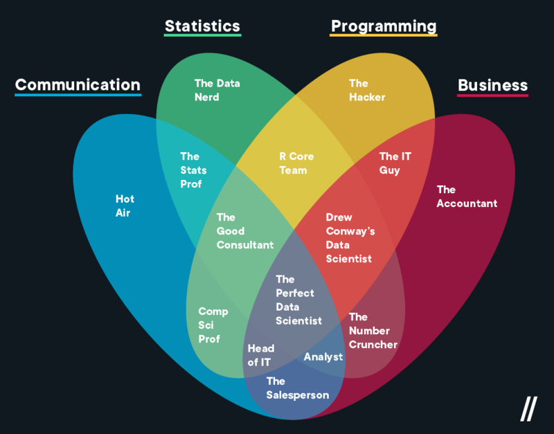

ACCT 3210: Advanced Management Accounting
HKUST School of Business and Management
Roadmap for Lecture 1
- Review Resources and Policies
- Why are we here? What is ‘Management Accounting’?
Review Resources and Policies
Why are we here?
To Study ADVANCED Management Accounting…
- But what is management accounting?
- And how will we make this ‘advanced’?
Simple Definition
Management accounting is internal accounting.
This definition separates managerial accounting from other forms of external accounting in helpful ways:
- Financial or Public Accounting: External accounting for compliance with IFRS, GAAP, etc.
- Tax Accounting: External accounting for compliance with tax laws.
Is the external=financial/tax and internal=management distinction enough?
- On one hand, this is a helpful framing because it emphasizes that the accounting activity in the external domains is determined by accounting rules.
- On the other hand, this is not a helpful framing, because it does not actually tell us what management accounting is.
This is not just a problem for this class…
Inability to clearly define the accounting activity beyond compliance is the root of two current problems in the accounting field:
- The role of accounting as the ‘language of business’ has been largely ceded to data science and business intelligence functions.
- Focus on compliance with formal regulatory requirements has created a profession specialized in tasks which are at high risk of automation.
What is Management Accounting? Four Answers
- Accounting for Decision Making (Business Intelligence/Data Science).
- Accounting for Control (Internal Audit/Performance-Evaluation).
- A collection of topics related to how information, incentives, and resources move through an organization.
- Facilitators of the resource bargains within the organization, critical to its survival as a viable system.
Zimmerman’s Answer (1 & 2)
“The controller, the firm’s chief management accountant, has responsibility for data collection and reporting. The controller compiles the data to prepare the firm’s balance sheet, income statement, and tax returns. In addition, this person prepares the internal reports for the various divisions and departments within the firm and helps other managers by providing them with the data to make decisions-as well as the data to evaluate these managers’ performance.”
…
“The controllership function at the corporate, division, and plant levels involves assisting decision-making and control. The controller must balance providing information to other managers for decision making against providing monitoring information to top executives for use in controlling the behavior of lower-level managers.”
…
“The importance of the internal control system cannot be stressed enough. Throughout this book, we use the term control to mean aligning the interests of employees with maximizing the value of the firm. The most basic conflict of interest between employees and owners is employee theft.”
(Zimmerman 10e p.9-11)
Accounting for decision making
“The controller, the firm’s chief management accountant, has responsibility for data collection and reporting. The controller compiles the data to prepare the firm’s balance sheet, income statement, and tax returns. In addition, this person prepares the internal reports for the various divisions and departments within the firm and helps other managers by providing them with the data to make decisions-as well as the data to evaluate these managers’ performance.” (Zimmerman 10e p.9)
- In the modern firm these activities require skills outside the scope of traditional accounting problem sets. These are data science skills.
Accounting for decision making is ground that our profession has lost
- We can either give up this ground, or learn the tools we need to win this ground back.
- We will do the latter in this class.
What is a Data Scientist?

Conway’s Data Scientist
What is a Data Scientist?
These skills are within our reach
Accounting for Control
“The importance of the internal control system cannot be stressed enough. Throughout this book, we use the term control to mean aligning the interests of employees with maximizing the value of the firm. The most basic conflict of interest between employees and owners is employee theft.”
Accounting for Control
This has three aspects:
- Catching fraud. (Internal audit)
- “Managing costs and profitability.” (Increase profits by means we control)
- Measuring performance. (Incentive alignment)
Summary of 1 & 2
This is a solid way to think about management accounting. It has a few weaknesses:
- These are still just collections of tasks, hence why so much of it has been sliced off into data science or automated. We still lack a compelling framework for the fundamental function of management accounting.
- max(Firm Value)–see Friedman (1970)–comes close to this, but it may not be consistent with stable (viable) systems as it leaves no level of the firm without the incentives control is concerned with. it unclear whether this is consistent with the existence of firms as viable systems.
- There is a fundamental disconnect between the use of information for control and for decisions.
- If you pay me based on a number, I will only make that number go up.
A collection of topics
Here is a real list of topics from a past version of this course:
- Understand how management accountants affect strategic decisions.
- Understand the set of business functions in the value chain.
- Understand what professional ethics mean to management accountants.
- Understand that managers make decisions in an uncertain environment and describe ways to measure uncertainty.
- Use the five-step decision-making process to make decisions.
- Describe the five steps to perform quantitative analysis in a decision model.
- Use decision tables and decision trees to make decisions under uncertainty.
- Understand how information helps to resolve uncertainty and determine the value of information.
- Perform CVP analysis for problems that explicitly incorporate uncertainties.
- Explain how conflicts can arise between the decision model used by a manager and the performance-evaluation model used to evaluate the manager.
- Explain the two assumptions frequently used in cost-behavior estimation.
- Describe linear cost function and three common ways in which they behave.
- Understand various methods of cost estimation.
- Outline six steps in estimating a cost function using quantitative analysis.
- Describe three criteria used to evaluate and choose cost drives.
- Explain and give examples of nonlinear cost functions.
- Distinguish the cumulative average-time learning model from the incremental unit-time learning model.
- Be aware of data problems encountered in estimating cost functions.
- Understand the usefulness of the linear programming (LP) technique for business managers.
- Formulate business planning problems as LP models that are subject to one or multiple constraints.
- Solve LP problems by the graphic and the trial-and-error approach.
- Perform sensitivity analysis in LP problems to aid business decisions.
- Recognize which of two generic strategies a company is using.
- Analyze changes in operating income to evaluate strategy.
- Distinguish engineered costs from discretionary costs.
- Identify unused capacity and explain how to manage it.
- Identify four purposes for allocating costs to cost objects.
- Understand criteria to guide cost-allocation decisions.
- Discuss decisions faced when collecting costs in indirect-cost pools.
- Discuss why a company’s revenues can differ across customers purchasing the same product.
- Apply the concept of cost hierarchy to customer costing.
- Discuss why customer-level costs differ across customers.
- Understand how an ABC system with a customer focus is important for managing customers.
- Subdivide the sales-volume variance into the sales-mix variance and the sales-quantity variance.
- Subdivide the sales-quantity variance into the market-share variance and the market-size variance.
- Distinguish the single-rate method from the dual-rate method.
- Understand how the uncertainty users face is affected by the choice between budgeted and actual cost-allocation rates.
- Allocate support-department costs using the direct method, the step-down method, and the reciprocal method.
- Allocate common costs using the stand-alone method and the incremental method.
- Identity the split-off point in a joint-cost situation.
- Distinguish joint products from byproducts.
- Explain why joint costs are allocated to individual products.
- Allocate joint costs using four methods.
- Explain why the sales value at split-off method is preferred when allocating joint costs.
- Explain why joint costs are irrelevant in a sell-or-process-further decision.
- Describe the benefits and costs of decentralization.
- Explain transfer prices and four criteria used to evaluate them.
- Calculate transfer prices using three methods.
- Illustrate how market-based transfer prices promote goal congruence in perfectly competitive markets.
- Understand how to avoid making suboptimal decisions when transfer prices are based on full cost plus a markup.
- Describe the range over which two divisions negotiate the transfer price when there is unused capacity.
- Apply a general guideline for determining a minimum transfer price.
- Incorporate income tax considerations in multinational transfer pricing.
- Select financial and non-financial performance measures to use in a balanced scorecard.
- Design an accounting-based performance measure.
- Use segment reporting to evaluate the performance of a profit center.
- Analyze return on investment (ROI) using the DuPont method.
- Use the residual-income (RI) measure and understand its advantages.
- Describe the economic value added (EVA) method.
- Indicate the difficulties that occur when the performance of divisions operating in different countries is compared.
A collection of topics
- These are good topics. We will cover most, if not all, of them.
- The flow of resources, information, and incentives through an organization is a good way to think about what management accounting is.
- But a list of topics is not a definition, and it’s not a justification for a profession, and it’s not a reason for us to not be automated out of jobs, and it’s not enough of a reason for us to be here.
- We need a unifying theory of management accounting.
Resource Bargains in a Viable System
The Viable System Model
- Comes from the study of complex systems in nature. Stafford Beer and other management scientists took observations about how complex systems in nature survive and applied them to organizations.
- The model identifies 5 systems that function in a viable system.
The Viable System Model
- Note that this model is recursive, with systems nesting within systems.
- It is natural to think of a firm as a whole as a system, but we could also zoom in to a department, or zoom out to an industry, or zoom out further to a global economy. Our focus will be the firm as a whole.
The Viable System Model
Immediate and internal systems:
- System 1: Operational units that perform primary activities
- System 2: Coordination mechanisms that resolve conflicts between operational units
- System 3: Internal regulation, resource allocation, performance monitoring
Future-oriented and external systems:
- System 4: Intelligence functions dealing with the external environment and future planning
- System 5: Policy and identity, setting overall direction and purpose
Management accounting is the interface between the immediate and future-oriented systems
The resource bargain
In the viable systems model, resources flow through the firm based on ongoing negotiations between the business units. The ‘resource bargain’ is the active negotiation and agreement process whereby:
- System 3 allocates resources and sets targets for operational units
- System 1 units commit to delivering specific outcomes
- Both sides agree on performance metrics and accountability system 2 coordinates the process.
The resource bargain
System 3 is responsible for facilitating a negotiation and agreement process that meets the strategic goals and plans set at the higher levels of the firm. The framing of this process as a negotiation subsumes Zimmerman’s focus on monetary incentives and pay for performance. This is one of many ways to achieve resource bargain.
Management accounting as a facilitator of the resource bargain
In the VSM version of the firm the management accounting function (Comptroller) is located in system 3 and is critical to the establishment and function of the resource bargain.
- Responsible for measurement of System 1 & 2 operations.
- This allows system 1 & 2 to fine-tune without interfering with higher levels.
- Translate strategic goals into operational targets to inform the resource bargain.
Example: A Manufacturing Firm
System 1: Operations
- Production lines and assembly
- Warehousing operations
- Distribution centers
System 2: Coordination
- Production scheduling
- Quality control standards
- Enterprise Resource Planning (ERP)
System 3: Internal Management
- The Comptroller (management accountant)
- Operations management
- Resource allocation (optimization)
- Performance monitoring
System 4: Intelligence & Development
- Research & Development
- Market research
- Strategic planning
System 5: Policy & Identity
- Board governance
- Corporate strategy
- Mission and values
CEO is often here, though in many cases (especially in ‘founder mode’) the CEO may be involved in system 3. In startups one person may do many of these jobs, or groups may do them at different times.
How will we make this ‘advanced’?
- The ‘Tools’ section of the course is intended to give you a starting point for winning back some of the ground lost to other fields.
- In addition to introducing traditional management accounting topics, we will also evaluate them in terms of their contribution to the viability of the firm. We will think carefully both about how a firm succeeds (is viable) and fails.